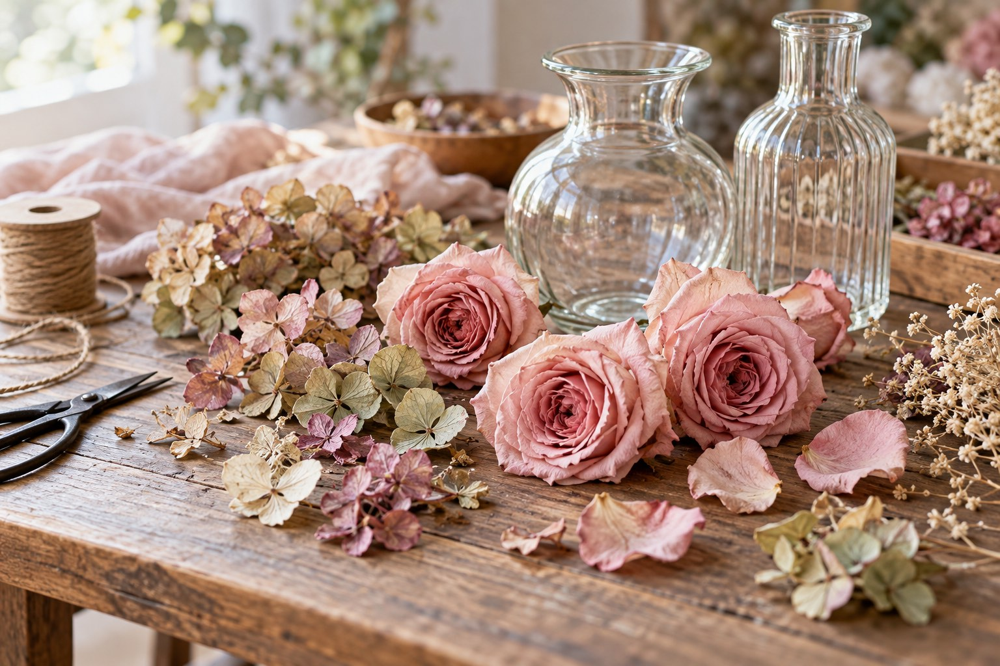

基本の体験
2時間・5,500円、プチクラフト2作品の掲載案内です。税区分と材料の内訳、現在の適用料金は公式へご確認ください。

FLOWER CRAFT · SAPPORO
押し花と立体乾燥花を楽しむ、札幌のアトリエ。はじめの体験から継続して学ぶコースまで、条件を比べてご案内します。
保存された公式掲載情報をもとにした参考案内です。最新の料金・受付状況・実施条件は公式でご確認ください。
GUIDE 01
2時間・5,500円、プチクラフト2作品の掲載案内です。税区分と材料の内訳、現在の適用料金は公式へご確認ください。
2時間30分・6,500円。ミニ押しマットと乾燥作業を加えた別の内容です。基本体験と同一料金ではありません。
希望する日時を第2希望まで整理して相談できます。希望日の受入や当日の完成を保証するものではありません。
GUIDE 02
体験後の方に向けた3回コースで、単発も可能との案内です。2時間のレッスン料2,500円に、教材3,000〜6,000円と生花が別途必要。教材費の適用単位を含め、総額は公式へご確認ください。
1回3,300円＋教材費という料金変更の予告があります。現在の料金とは区別し、受講時期に応じた生花代などの費用もあわせてご確認ください。
GUIDE 03
体験レッスンまたはワンデイレッスン受講者向け。花の乾燥・保管、ガラスドームのアレンジと密封、立体額の密封を学ぶ案内です。
3回は希望するタイミングで受講できると掲載されています。日程と現行料金は個別にご確認ください。
GUIDE 04
税込7,500円。講習2,500円・資材1,500円・花材3,500円の内訳で、持ち物なしと案内されています。この限定講座の条件です。
11月10〜14日の指定枠で、締切は10月31日21時の掲載案内です。全日終日の開催ではありません。最新の詳細日程と残席は公式記事をご確認ください。
後日に完成品を受け取る案内があり、発送不可とされています。返金やキャンセル料を独自に補わず、詳細は公式へご確認ください。
GUIDE 05
JR森林公園駅から徒歩約15分。駐車スペースの案内があります。具体的な来訪日と利用条件は事前に相談してください。
OFFICIAL INFORMATION
希望する内容の詳しい条件と日程は、公式ページへ。この見本では申込・予約・決済を受け付けていません。